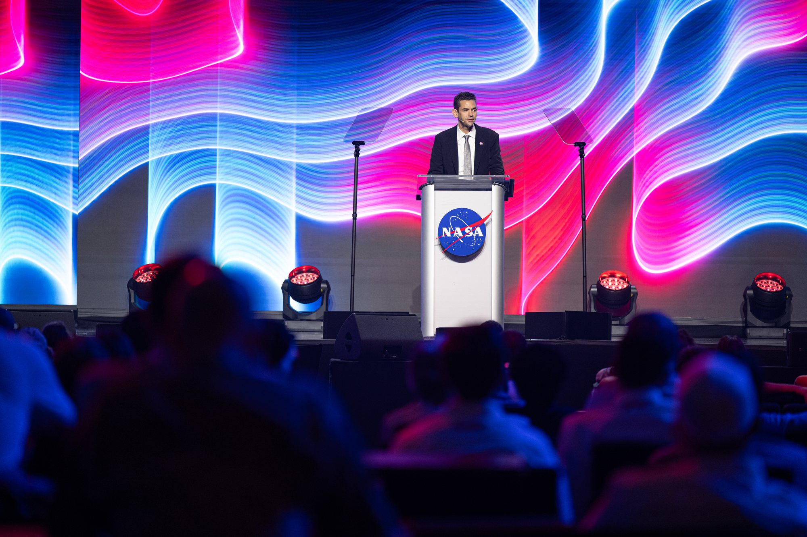
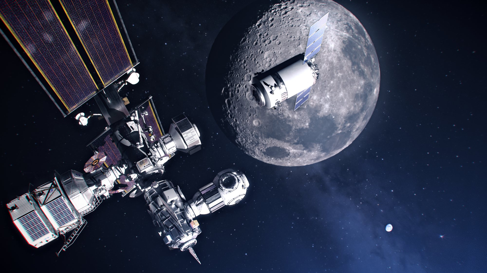
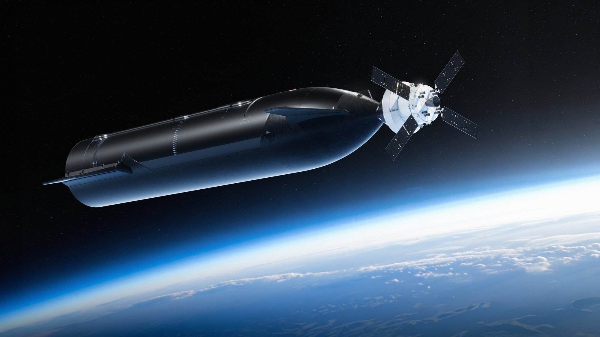
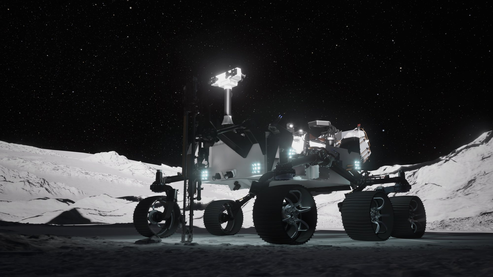

Sabato 7 novembre 2026, nel giorno conclusivo del MAX POWER, la fiera aerospaziale con air show organizzata dalla NASA al Kennedy Space Center in Florida, l'agenzia ha messo sul tavolo un pacchetto intero di contratti per la Moon Base, il suo avamposto permanente al Polo Sud della Luna. Dentro c'è una riga che riguarda direttamente Starship: nel 2028 il veicolo di SpaceX dovrà portare nello spazio cislunare un gruppo di satelliti di comunicazione. È la prima missione NASA con una data che mette Starship sulla rotta della Luna al di fuori del lander per gli astronauti.
Che cosa ha deciso la NASA
Il testo del comunicato è breve. La NASA ha scelto SpaceX per la Cislunar Communications Deployment Demonstration, una dimostrazione di dispiegamento di comunicazioni nello spazio cislunare. Lo strumento non è una gara nuova: è un ordine di lavoro di tipo «Specialized Delivery Mission», una missione di consegna speciale, emesso su un contratto di logistica lunare che SpaceX ha già. Attraverso quell'ordine, SpaceX lancerà satelliti di comunicazione a bordo di una Starship verso lo spazio cislunare nel 2028.
Lo scopo dichiarato è preparare il terreno. La dimostrazione, scrive l'agenzia, servirà a orientare lo sviluppo delle future reti di comunicazione lunari che terranno collegati gli astronauti, i controllori di missione e la Moon Base. Non si parla di un allunaggio: la Starship di questa missione dovrà rilasciare i satelliti in volo, nella regione fra la Terra e la Luna, non scendere sulla superficie.
Le cose che mancano sono tante e vanno dette. La NASA non indica il valore dell'ordine, non dice quanti satelliti saranno a bordo, chi li costruisce, quali radio porteranno né in quali orbite verranno lasciati. Non precisa nemmeno se il volo richiederà rifornimenti in orbita, il passaggio che rende complesse le missioni lunari di Starship. Per ora c'è un nome, un anno e un obiettivo.

Quale contratto: l'eredità della Gateway
Il comunicato non nomina il contratto di logistica lunare su cui poggia l'ordine. L'unico accordo di questo tipo noto fra NASA e SpaceX è il Gateway Logistics Services, firmato nel marzo 2020 per rifornire la stazione in orbita lunare Gateway con il cargo Dragon XL, da lanciare su Falcon Heavy. Fin dalle bozze del 2019 quel quadro prevedeva proprio le «Specialized Delivery Missions», cioè consegne speciali di elementi diversi dal normale carico di rifornimento.
La Gateway, però, non c'è più. A marzo 2026 la NASA ha cancellato la stazione orbitale e ha spostato le risorse sulla base in superficie; già a gennaio l'agenzia si diceva a un bivio su come gestire la logistica lunare. Se l'ordine del 7 novembre passa davvero da quel contratto, e la formula usata lo fa pensare, è un modo rapido per riutilizzare un accordo rimasto senza il suo obiettivo originario, con Starship al posto del Dragon XL. Resta però un'ipotesi: la NASA non lo ha scritto.

Perché le comunicazioni vengono prima
Un avamposto al Polo Sud lunare ha un problema che le missioni Apollo non avevano. Vicino al polo la Terra resta bassa sull'orizzonte o sparisce dietro creste e crateri, e i fondi dei crateri in ombra permanente, dove si cerca il ghiaccio, non vedono mai il nostro pianeta. Rover, lander e astronauti che lavorano lì hanno bisogno di ripetitori in orbita per parlare con la Terra in modo continuo. Senza una rete di questo tipo una base permanente non funziona.
Per questo la NASA mette le comunicazioni tra i primi mattoni. La missione del 2028 è una dimostrazione: deve provare come si dispiegano satelliti di questo tipo nello spazio cislunare e fornire i dati per progettare la rete definitiva. Per SpaceX, che gestisce già la più grande costellazione di comunicazioni della storia con Starlink, è un incarico vicino al proprio mestiere, anche se il comunicato non collega in alcun modo i satelliti lunari a Starlink.
SpaceX fra gli otto di CLPS 2
La seconda notizia per SpaceX è il suo ingresso in CLPS 2, la nuova fase del programma Commercial Lunar Payload Services, con cui la NASA compra consegne robotiche sulla Luna invece di costruire i lander in casa. Le aziende selezionate sono otto: Blue Origin, Firefly Aerospace, Intuitive Machines, ispace-U.S., Lockheed Martin Space, Northrop Grumman Space Systems, SpaceX e Voyager Technologies. Potranno competere per le future missioni di consegna sulla superficie, gestendo, costruendo e facendo operare i lander che porteranno strumenti scientifici, tecnologie e infrastrutture della Moon Base.
Il contratto quadro dura dieci anni ed è a consegna indefinita, con più aggiudicatari: il valore massimo complessivo è di 10 miliardi di dollari, ma è un tetto condiviso fra tutte le aziende, non una somma assegnata a SpaceX. Essere nella lista significa poter partecipare alle singole gare, non avere già un volo. La NASA ha anche alzato il valore del primo CLPS da 2,6 a 4,2 miliardi di dollari per gli obiettivi della Fase Uno della base; quel contratto resta in vigore fino a novembre 2028, con altri cinque anni, fino a novembre 2033, per completare le consegne già assegnate.

Il resto del pacchetto: rover nucleare, rimorchiatori, torri
Gli annunci di SpaceX sono due righe di un elenco molto più lungo, e il quadro aiuta a capire dove si colloca Starship. Il pezzo più vistoso è PROMISE, sigla di Polar Rover for Observation, Mapping, and In-Situ Exploration: un rover a sei ruote alimentato a energia nucleare, capace di lavorare durante le lunghe notti lunari e dentro le zone in ombra permanente. Lo costruirà il Jet Propulsion Laboratory con componenti di riserva e modelli di prova dei rover marziani Curiosity e Perseverance. Porterà una trivella per estrarre regolite da circa un metro di profondità, spettrometri, sensori di temperatura e radiazioni e telecamere. Il lancio è previsto per la fine del 2028, la missione dovrebbe durare 18 mesi. A portarlo sulla Luna sarà Blue Origin, con il lander Mark 1: contratto base da 94 milioni di dollari e un'opzione da altri 140 milioni.
Poi ci sono i trasporti fra Terra e Luna. La NASA ha assegnato sei ordini, per circa 1,3 miliardi di dollari complessivi, nel contratto per lanci dedicati e condivisi VADR, a Arrow Science and Technology, Blue Origin e Impulse Space. Le missioni useranno rimorchiatori orbitali, che il comunicato paragona a camion per lunghe distanze, e voleranno su New Glenn di Blue Origin, Terran R di Relativity Space e anche su Falcon 9 di SpaceX. I veicoli di trasferimento saranno di Blue Origin, Firefly Aerospace, Impulse Space e Quantum Space. Fra i carichi ci sono la sonda CAPSTONE 02 e i droni esploratori MoonFall, che dovranno studiare il Polo Sud prima dell'arrivo degli astronauti.
Sulla superficie, infine, la NASA compra i componenti per miniCAST, una piccola torre che unisce energia e comunicazioni: accumulo di energia da Honeybee Robotics, società di Blue Origin, produzione di energia da Redwire e trasferimento di energia senza fili da Yank Technologies. Il Marshall Space Flight Center assemblerà e proverà i sistemi; un bando per impianti di energia completi è atteso all'inizio del 2027.

Le parole della NASA
L'amministratore Jared Isaacman ha presentato il pacchetto con una frase che riassume il metodo: «We are building the Moon Base mission by mission», stiamo costruendo la Moon Base una missione alla volta. Ha aggiunto che gli annunci estendono quasi ogni parte della campagna, seguendo la regola delle grandi epoche della NASA: volare spesso, imparare, applicare le lezioni e diventare più capaci a ogni missione. E ha promesso che quando gli astronauti torneranno sulla Luna troveranno i primi elementi della base già ad aspettarli in superficie.
Carlos García-Galán, responsabile del programma Moon Base, ha ricordato che sono passati otto mesi da Ignition, il rilancio del programma lunare: in questo tempo, ha spiegato, l'agenzia ha riunito molti progetti in un unico programma, trasformando l'architettura dell'esplorazione umana in una campagna continua e iterativa. «Most importantly, we've taken action», soprattutto abbiamo agito, ha detto, citando i nuovi contratti e le nuove partnership.
Che cosa cambia per Starship
Finora il legame fra Starship e la Luna passava quasi tutto dal lander per astronauti, il sistema HLS, con i suoi rifornimenti in orbita e un calendario discusso. L'ordine del 7 novembre aggiunge un secondo filo: un volo cargo, con una data, per un cliente istituzionale, verso una destinazione oltre l'orbita terrestre. Insieme al posto in CLPS 2 apre a SpaceX la possibilità di vendere alla NASA anche consegne robotiche sulla Luna, in concorrenza con Blue Origin e gli altri.
Il 2028 è vicino per un veicolo che ha raggiunto l'orbita per la prima volta solo con Flight 14. Il prossimo passo è già in calendario: Flight 15, non prima del 13 novembre, con il tentativo di riportare alla torre sia il Super Heavy sia la nave. Il dossier dell'8 novembre su quel volo passa all'archivio Notizie. Per la missione lunare restano da conoscere i dettagli tecnici e il costo, che la NASA per ora non ha reso pubblici.
Fonti pubbliche e tracce
Ultimo aggiornamento editoriale: 9 novembre 2026, ore 9:30 (ora italiana). Nel corpo non si ripete la fonte a ogni frase: le tracce sono raccolte qui. Le citazioni in inglese sono tradotte o riassunte subito dopo. Il collegamento con il contratto Gateway Logistics Services è una deduzione redazionale, non un'indicazione della NASA.
- NASA, «NASA Awards Moon Base Transportation, Technology, Science Projects», 7 novembre 2026: annuncio al MAX POWER del Kennedy Space Center; selezione di SpaceX per la Cislunar Communications Deployment Demonstration con un ordine Specialized Delivery Mission su un contratto di logistica lunare esistente, satelliti di comunicazione su Starship verso lo spazio cislunare nel 2028; CLPS 2 con otto aziende, dieci anni, tetto di 10 miliardi; CLPS 1.0 portato da 2,6 a 4,2 miliardi, in vigore fino a novembre 2028 e consegne fino a novembre 2033; rover PROMISE (JPL, fine 2028, 18 mesi, Blue Origin Mark 1, 94 + 140 milioni); sei ordini VADR per circa 1,3 miliardi (Arrow Science and Technology, Blue Origin, Impulse Space; New Glenn, Terran R, Falcon 9; CAPSTONE 02, MoonFall); miniCAST (Honeybee Robotics, Redwire, Yank Technologies); bando NextSTEP-3 B; dichiarazioni di Jared Isaacman e Carlos García-Galán.
- Pad Zero, 8 novembre 2026: lettura dei due annunci che riguardano SpaceX; valore dell'ordine e numero dei satelliti non indicati dalla NASA.
- Tesla North, 8 novembre 2026: la missione prevede il rilascio di satelliti nello spazio cislunare, non un allunaggio; i 10 miliardi di CLPS 2 sono un tetto condiviso.
- Reuters, 24 marzo 2026: la NASA cancella la stazione orbitale lunare Gateway e punta su una base in superficie.
- SpaceNews, Jeff Foust, 29 gennaio 2026: la NASA a un bivio sulla logistica della Gateway e sul ruolo del Dragon XL.
- Scheda del contratto Gateway Logistics Services 80KSC020C0012 assegnato a SpaceX nel 2020.
- NASASpaceflight, giugno 2019: le «Specialized Delivery Missions» previste fin dalla bozza del bando Gateway Logistics.
- Rivoluzione Spaziale, dossier dell'8 novembre 2026: Starship Flight 15, data non prima del 13 novembre e piano di ritorno della Ship.
Fotografie utilizzabili
Tutte le immagini sono libere, di pubblico dominio NASA: il concetto della Moon Base e il rover PROMISE vengono dal comunicato del 7 novembre 2026; Isaacman sul palco del MAX POWER (5 novembre 2026, NASA/John Kraus), il concetto NASA/SpaceX di Orion con la Starship HLS e l'illustrazione del Dragon XL sono su Wikimedia Commons. Non esistono immagini della missione del 2028, che è ancora da progettare. Dettagli in scheda dei crediti fotografici.
Apri il dossier Flight 15 archiviato · Archivio Notizie · Torna a SpaceX